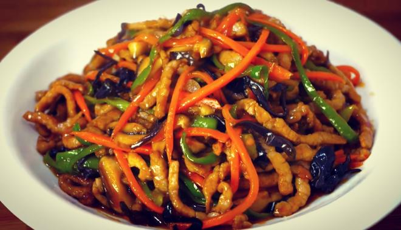

鱼香肉丝

介绍
鱼香肉丝（Yuxiang shredded pork），是四川的一道特色名菜，该菜品以泡辣椒、泡姜、大蒜、黄葱、生姜和醋炒制猪里脊肉丝而成，由民国时期的一位川菜大厨所创制，相传灵感来自泡椒肉丝。
鱼香肉丝是一道著名川菜，其辣咸鲜酸兼备，葱姜蒜香浓郁，其鱼香味是用不含鱼的调味品调制而成，此法源出于四川民间独具特色的烹鱼调味方法，而今已广泛用于川味的熟菜中。
食材原料
- 猪后腿（里脊肉）300g
- 黄葱几根
- 肉丝腌制：姜粒少许
- 料酒 1 勺
- 盐 1 小勺
- 淀粉 1 勺
- 胡萝卜 1 根（可选）
- 豆瓣酱 1 大勺
- 菜油 1 勺
- 鱼香汁：醋 3 勺
制作步骤
- 先把所有材料切丝、姜蒜切粒。
- 肉丝中放两个姜片，加料酒 1 勺、耗油 1 勺、油 1 勺、淀粉 1 勺、盐 1 小勺，抓匀腌制片刻。
- 再来调鱼香汁：香醋 4 勺、生抽 2 勺、淀粉 1 勺，搅拌均匀。
- 油热，下入肉丝煸炒至变色。
- 放入 1 勺豆瓣酱炒匀。
- 放入其他配菜翻炒。
- 倒入鱼香汁，翻炒均匀。
- 出锅前放入黄葱粒即可。